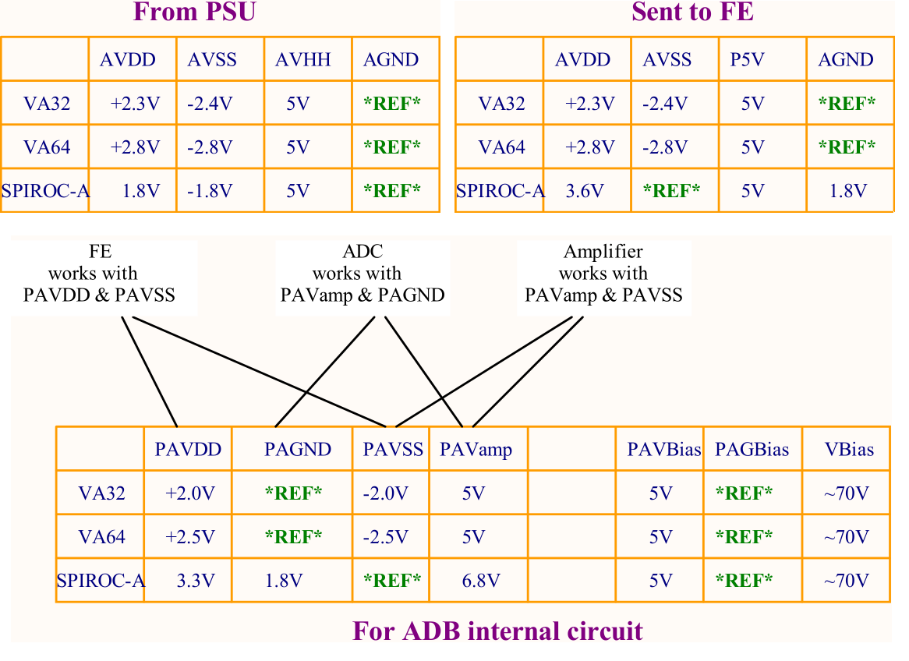
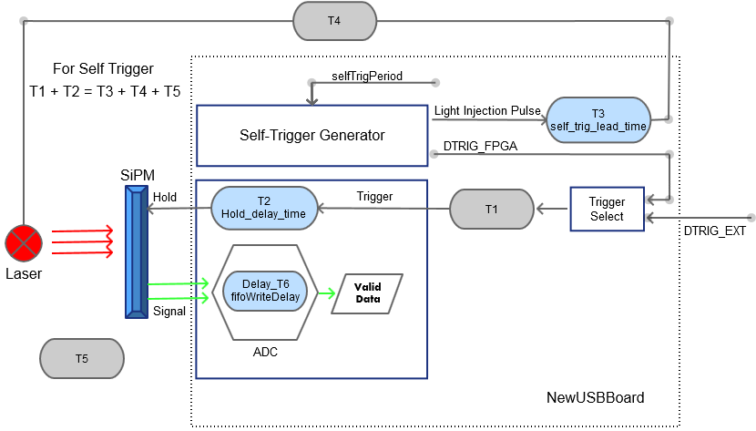
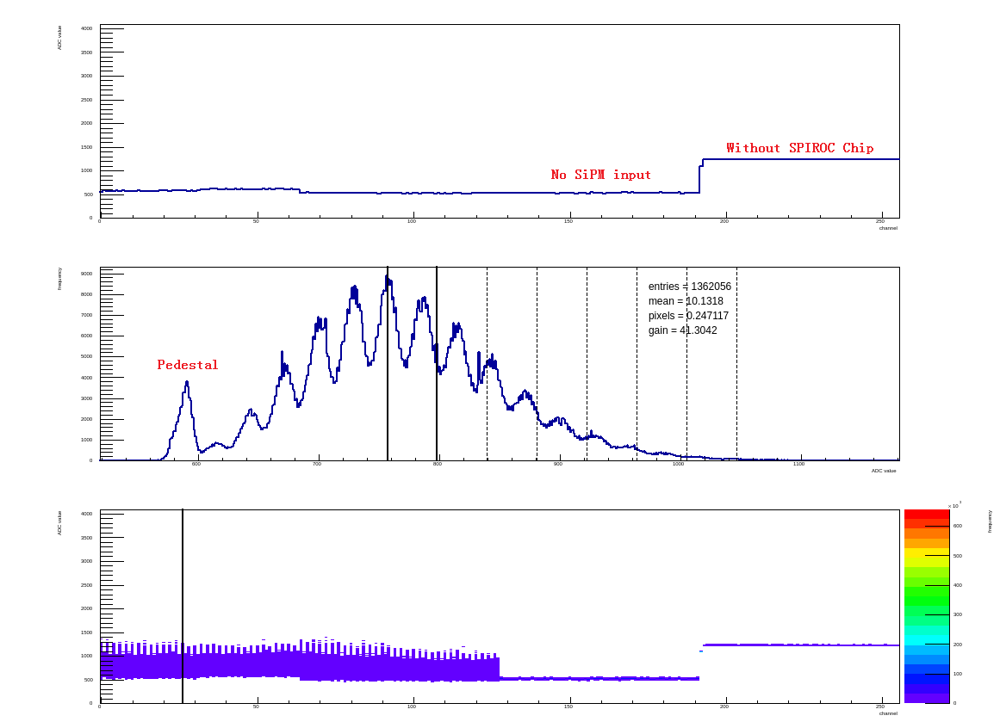

-------------- Hardware ------------------
1.1 Power Supply
The power supply of the NewUSBBoard is divided into:
- Digital power for the acquisition FPGA and USB interface +D3.3V (1A). This power supply is isolated from all other power supplies via magneto couplers.
- Analog power is different for different front-end board. Jumpers are used to select the exact type of FE board:
- W1+W4 , 1&2 in APWR_SET are connected -- VA64
- W2+W5 , 1&2 in APWR_SET are connected -- VA32
- W3+W6 , 3&4 in APWR_SET are connected -- SPIROC 
1.2 Important signals
External Trigger & Busy (piggyback board)
The middle pin of the jumpers "NIM_TRIG" and "NIM_BUSY" in piggyback board are the TTL signals for TRIG_OUT and BUSY_OUT.
External LED Pulse (piggyback board)
The middle pin of the jumper "ADB_TP" in piggyback board is the TTL Pulse for laser driver.
Analog signal from front-end board (NewUSBBoard)
The analog signal from front-end board is directly measured by ADC, and it can be also measured from the two pins of c59 on NewUSBBoard by oscilloscope. When the Spiroc works in normal mode, the analog signal is the peak value. And when the Spiroc works in trace mode, and without self-trigger signal, the analog signal is the actual waveforms after shaping.
Hold_B signal (Spiroc front-end board)
TP10
-------------- Firmware ------------------
2.1 External vs Internal Trigger
The data acquisition is driven by a trigger signal which can be used and generated in two different ways.
Internal Trigger
A trigger is generated by the NewUSBBoard itself in this mode. It is usually used in the calibration.
The trigger is generated periodically. The variable period is controlled by selfTrigPeriod.
Up on the generation of a internal trigger, a light injection pulse is send to the laser driver to inject light into the SiPM detectors and the readout sequence is ready to start. The width of the trigger pulse is changeable, determined by LI_phase_adj.
To get valid data, adjust the selfTrigLeadPeriod, holdDelayTime and fifoWriteDelay and make sure the equation shown in the Figure 2.3.1 is satisfied.

- T1 is summed up to 120 ns composed of
???ns NIM to TTL conversion, 6 ns digial isolators, 1.5ns TTL to LVDS conversion and so on... - T2 = hold_delay_time * 25 ns
- T3 = self_trig_lead_time * 25 ns
- T4 unknown
- T5 peaking time of readout chip - for SpirocA 25 ~ 175ns
External Trigger
Typically in a test beam setup an external trigger is generated by some trigger logic used to generate the coincidence with traversing particles. This trigger is processed ”asynchronous” to set the hold signal of the attached Front End modules via Up-Link control signals. The delay between trigger and hold signal is fixed(T1 in Figure 2.3.1), and it is strongly required to be as low as possible, since the total trigger delay between crossing particle and hold signal must be equal to the peaking time of readout chip in external trigger mode.
Up on a trigger, the hold signal control on the Up-Link connector for all links is set to low (???ns delay) and the sampling sequence is started. During the sampling the Busy out signal is set high and new triggers during this time need to be gated in the trigger generation. Synchronization in the external trigger mode can be reached by sending at the beginning of the data acquisition a software Reset daq or a external Reset daq which resets all FIFOs and the readout finite state machine. A trigger counter is attached in the data which allows to collect synchronous data over several USB boards.
2.2 Description of Global Registers
A set of control and monitor registers are provided. Below a description of its functionality is given. All the registers are accessed in the high speed mode. For the access to the registers, two tools in the scifiusbboard/Builds/ are used:
./readoutDebugtool -r reg_address
./readoutDebugtool -w reg_address reg_value
Reg0, addr=0x0000, Fromt End Type & Trigger Select Register
| Bits | Access | Signal Name | Description |
|---|---|---|---|
| 2..0 | R/W | FE_Type | Select the Front-End card |
| 3 | R/W | self_trigger_enable | 0: Enable external trigger 1: Enable internal trigger |
| 4 | R/W | led_enable | 0: Disable the laser driver 1: Enable the laser driver |
| 15..5 | R/W | Reserved |
| Signal Name | Value | Front-End card | number of sampers per Up-link |
|---|---|---|---|
| FE_Type | 0b000 | VA32 | 128 |
| FE_Type | 0b001 | SPIROC_EPFL | 36 |
| FE_Type | 0b010 | SPIROC_Aachen | 128 |
| FE_Type | 0b011 | AMS_K_ladder | 6x64 |
| FE_Type | 0b100 | AMS_S_ladder | 5x64 |
| FE_Type | 0b101 | HPE_VA256 | 256 |
| FE_Type | 0b110 | SPIROC_A | 64 |
| FE_Type | 0b111 | VATA64_EPFL | 64 |
Reg1, addr=0x0001, Reset DAQ Register
| Bits | Access | Signal Name | Description |
|---|---|---|---|
| 0 | R/W | reset_daq_reg | Reset the DAQ part of the board, including FIFOs and FSM. |
| 15..1 | R/W | Reserved |
Reg2, addr=0x0002, Control Register
| Bits | Access | Signal Name | Description |
|---|---|---|---|
| 0 | R/W | FE_CLock_Mode | Set Front-End Board Clock Mode?? |
| 1 | R/W | manual_set_busy | ’0’=normal operation ,’1’=set the busy can be used to test the busy connection or gate the trigger during setup |
| 15..2 | R/W | Reserved |
Reg3,addr=0x0003, Fifo monitor register
| Bits | Access | Signal Name | Description |
|---|---|---|---|
| 0 | R | fifo_usedw(16) | 17th bit of Used word of the input FIFOs, it is the same for all FIFOs |
| 12..1 | R | Reserved | |
| 13 | R | fifo_almost_full | Indicates that the FIFO can not receive any more events |
| 14 | R | fifo_underflow | fifo underflow |
| 15 | R | fifo_overflow | fifo overflow |
Reg4,addr=0x0004, Fifo monitor register
| Bits | Access | Signal Name | Description |
|---|---|---|---|
| 15..0 | R | fifo_usedw(15 to 0) | 0~15 bit of Used word of the input FIFOs, it is the same for all FIFOs |
Reg5,addr=0x0005, Event ID monitor register
| Bits | Access | Signal Name | Description |
|---|---|---|---|
| 15..0 | R | event_ID | The Event ID counter at the current time. Note that this counter can increase very fast. |
Reg6,addr=0x0006, Version monitor register
| Bits | Access | Signal Name | Description |
|---|---|---|---|
| 0..7 | R | FW_VERSION_DEFAULT | Not Used??? |
| 8..14 | R | Reserved | |
| 15 | R | DATA_TYPE | Not Used??? |
Reg7,addr=0x0007, Fifo Write Delay register
| Bits | Access | Signal Name | Description |
|---|---|---|---|
| 0..15 | R/W | fifoWriteDelay |
Reg8,addr=0x0008, Delay After Readout register
| Bits | Access | Signal Name | Description |
|---|---|---|---|
| 0..15 | R/W | delay_after_readout |
Reg9,addr=0x0009, Self Trigger Lead Time Register
| Bits | Access | Signal Name | Description |
|---|---|---|---|
| 0..15 | R/W | SELF_trig_lead_time(31 to 16) |
Reg10,addr=0x000A, Self Trigger Lead Time Register
| Bits | Access | Signal Name | Description |
|---|---|---|---|
| 0..15 | R/W | SELF_trig_lead_time(15 to 0) |
Reg11~Reg18, addr=0x000B ~ 0X0012, 8 data header registers
| Bits | Access | Signal Name | Description |
|---|---|---|---|
| 0..15 | R/W | data_header | start from data_header(1)??Each Up-Link has its individual header word which is stored in one of the 8 registers |
Reg19,addr=0x0013, Self Trigger Period register
| Bits | Access | Signal Name | Description |
|---|---|---|---|
| 0..15 | R/W | SELF_TRIG_PERIOD(31 to 16) | Self Trigger Period = Register Value * 25 ns |
Reg20,addr=0x0014, Self Trigger Period register
| Bits | Access | Signal Name | Description |
|---|---|---|---|
| 0..15 | R/W | SELF_TRIG_PERIOD(15 to 0) | Self Trigger Period = Register Value * 25 ns |
Reg21,addr=0x0015, QSPI register
| Bits | Access | Signal Name | Description |
|---|---|---|---|
| 0..9 | R/W | QSPI_start_addr | QSPI start address |
| 10..13 | R/W | Reserved | |
| 14 | R/W | QSPI_repeat_enable | QSPI repeat enable |
| 15 | R/W | QSPI_busy | QSPI busy |
Reg22,addr=0x0016, QSPI register
| Bits | Access | Signal Name | Description |
|---|---|---|---|
| 0..9 | R/W | QSPI_end_addr | QSPI end address |
| 10..15 | R/W | Reserved |
Reg23,addr=0x0017, QSPI register
| Bits | Access | Signal Name | Description |
|---|---|---|---|
| 0..11 | R/W | QMR(11 to 0) | QMR??? |
| 12 | R/W | Reserved | |
| 12..15 | R/W | QMR(15 to 13) | QMR??? |
Reg24,addr=0x0018, QSPI register
| Bits | Access | Signal Name | Description |
|---|---|---|---|
| 0..15 | R/W | QDLYR | QDLYR??? |
Reg25,addr=0x0019, Bias Voltage 1 SPI control register
| Bits | Access | Signal Name | Description |
|---|---|---|---|
| 0..15 | R/W | VB1_cTx | SPI control register for Bias Voltage 1 |
Reg26,addr=0x001A, Bias Voltage 2 SPI control register
| Bits | Access | Signal Name | Description |
|---|---|---|---|
| 0..15 | R/W | VB2_cTx | SPI control register for Bias Voltage 2 |
Reg27,addr=0x001B, Hold delay time register
| Bits | Access | Signal Name | Description |
|---|---|---|---|
| 0..15 | R/W | hold_delay_time | hold delay time |
Reg28,addr=0x001C, Hold type register
| Bits | Access | Signal Name | Description |
|---|---|---|---|
| 0..7 | R/W | hold_type | hold type |
| 7..15 | R/W | Reserved |
Reg29,addr=0x001D, QSPI register
| Bits | Access | Signal Name | Description |
|---|---|---|---|
| 0..15 | R/W | QSPI_PERIOD(31 to 16) | QSPI Period |
Reg30,addr=0x001E, QSPI register
| Bits | Access | Signal Name | Description |
|---|---|---|---|
| 0..15 | R/W | QSPI_PERIOD(15 to 0) | QSPI Period |
Reg31,addr=0x001F, Light Injection I2C register
| Bits | Access | Signal Name | Description |
|---|---|---|---|
| 0 | R/W | LI_i2c_dis | 0:Light Injection Module Enable 1:Light Injection Module Enable |
| 7...1 | R/W | LI_i2c_slave_wr_adr | 1~7 bit of Light Injection Module I2C slave write address |
| 8...15 | R/W | LI_i2c_slave_rd_adr | Light Injection Module I2C slave read address = write address&'0' |
Reg32,addr=0x0020, Light Injection I2C register
| Bits | Access | Signal Name | Description |
|---|---|---|---|
| 0..13 | R/W | Reserved | |
| 14 | R/W | LI_i2c_wr_done | 1: i2c write operation has finished. |
| 15 | R/W | LI_i2c_err | 1: error happens during i2c operation |
Reg33,addr=0x0021, Light Injection I2C register
| Bits | Access | Signal Name | Description |
|---|---|---|---|
| 0..7 | R/W | LI_i2c_reg_rd_dat | The value read by i2c operation |
| 8..13 | R/W | Reserved | |
| 14 | R/W | LI_i2c_err | 1: error happens during i2c operation |
| 15 | R/W | LI_i2c_rd_done | 1: i2c read operation has finished. |
Reg34,addr=0x0022, Light Injection Pulse Width register
| Bits | Access | Signal Name | Description |
|---|---|---|---|
| 0..7 | R/W | LI_phase_adj | Adjust the pulse width for the light injection module, need calibration |
| 8..13 | R/W | Reserved |
QSPI block address
| Start Address | End Address | Signal Name | Description |
|---|---|---|---|
| 0x0400 | 0x0800 | qspi_tx_rdback | |
| 0x0800 | 0x0C00 | qspi_cmd_rdback | |
| 0x0C00 | 0x1000 | qspi_rx_rdback |
---------------- software --------------------------
3.1 cfgFile
The configure file of NewUSBBoard is the cfgFile/board+ID.cfg. It sets the values of many variables. These variables and their meanings are listed below:
| variable name | bits | Description |
|---|---|---|
| pathToUsbBoardFirmware | path to NewUsbBoard Firmware(*.rbf) | |
| usbBoardID | Board ID, comes from the QuickUSB ID. See function boardID( ) in readout/UsbBoard.cpp. |
|
| withUplinkAdapter | 1 | UsbBoard with or without a V1->V3 uplink adapter, with = 1, without = 0. Not used in NewUsbBoard. |
| eventsPerAccess | 16 | Number of events read from USB board per USB block transfer (restricted by FIFO buffer size). |
| modeSel | 3 | Select mode to define the number of samples readout from the front end card, the same variable with FE_Type in firmware. 0=VA32 1=SPIROC_EPFL 2=SPIROC_Aachen 3=AMS_K_ladder 4=AMS_S_ladder 5=HPE_VA256 6=SPIROC_A 7=VATA64_EPFL |
| selfTrigEnable | 1 | 1=self trigger mode 0= external trigger mode |
| selfTrigPeriod | 32 | number of 25ns clock cycles for the self trigger period. |
| selfTrigLeadPeriod | 32 | number of 25ns clock cycles for the delay of trigger pulse to laser driver, which is designed for led calibration mode. |
| ledInjectionModeOn | 1 | 0=Disable the laser driver 1=enable the laser driver |
| holdDelayTime | 16 | number of 25ns clock cycles delay between trigger and hold signal. |
| holdType | 1 | Sel on each uplink 1..8: fast hold time = 0 (no delay) slow hold time = 1 (insert holdDelayTime) |
| uplinkID | 8 | Make uplinkID=boardID*10 + uplink_order for better understanding. |
| uplinkUse | string | Just a comment in software of the use for each uplink 1..8 void.(Don't use spaces) |
| calDelay | not used now | |
| delayAfterReadout | 16 | Number of 25ns clock cycles to wait after each event readout from the front end. |
| clkSelect | 1 | 0 = single clock sequence double 1 = clock sequence readout |
| fifoWriteDelay | 16 | Select a 25ns clock cycle delay for the data valid at the input of the Fifos (delay to adjust with he sampling time of the ADC). |
| busyOutputSwitch | 1 | Set this bit to 1 to impose busy output 1, its to fake a busy state. |
| biasSelect | 8 | for bias Voltage, not used now |
| biasVoltage | float | for bias Voltage, not used now |
| frontEndBoardType | 3 | choose the right frontEnd board type and use the corresponding configure file to configure it. not used now. Use SpirocSlowControl to configure the SpirocA board |
| executeFrontEndBoardConfiguration | 1 | execute Configuration for each uplink: 0 do not configure, 1 configure |
| adjustDACMode | 1 | not used now |
3.2 Utils
The bin files are under ./Builds, while the souce code are under ./utils.
Readout Test System
-
readoutDebugtool-- read and write the global registers in the firmwarereadoutDebugtool -r reg_address
readoutDebugtool -w reg_address reg_value -
adcView-- Start the readout sequence. Readout and display the resultes in real time. readoutTest-- Start the readout sequence and readout pre-defined number of events before stop.lis_piggyback-- Configure the laser driver holding on the piggyback board.SpirocSlowControl-- Configure the SPIROC board.
Data Analysis System
noiseAnalysisrawAnalysis
3.3 Data Acquisition Procedure
3.3.1 Set Proper Parameters (only do it once)
The following parameters should be considered to get the single proton signal:
- self_trig_lead_time (selfTrigLeadPeriod)
- hold_delay_time (holdDelayTime)
HOW TO SET PROPER PARAMETERS:
- Measure the delay between self-trigger and hold_B (TP10 in SpirocA front-end board)
- Measure the delay between self-trigger and actual analog output of front-end board (two pins of c59, SpirocA works in trace mode)
- adjust the holdDelayTime and selfTrigPeriod to make these two signals in alignment.
3.3.2 Configure the SpirocA
Use SpirocSlowControl to configure the SpirocA:
- Use Hold/hold_B rather than Trig.
- Set the DAC to 4.5v. (The actual BIAS Voltage of SiPM is "BIAS - 4.5") (only do itonce)
- Set the proper board ID and uplink.
for the first time:
./spirocSlowControl -p ../cfgFiles/ -b board_ID -u uplink_order -d 0_0_0_0_0_0_0_0 -i 1
for the rest time:
./spirocSlowControl -p ../cfgFiles/ -b board_ID -u uplink_order -i 1
- -p : the directory of configure file
- -b : board ID
- -u : uplink order, starts from 0
- -i : Select the trigger, 1:Trigger from hold_B;0:Trigger from Trig
3.3.3 Configure the laser driver
Use lis_piggyback to configure the laser driver
| Diode | Address | Amplitude | Bias current | Pre Amplitude |
|---|---|---|---|---|
| 4 | 0x7e | 0x30=48 | 0x02=2 | 0xff=255 |
3.3.4 Acquire the Pedestal
Use adcView to acquire data.
./adcView ../cfgFiles
3.3.4 Set the BIAS (high Voltage)
Voltage is 62V and Current Limit is 100uA.
Typically the dark current is around 1uA when the LED doesn't work.
3.3.5 Preliminary data acquisition
Use adcView to acquire data.

3.3.5 Record Data for Further Analysis
Use hdReadoutTest or ReadoutTest.